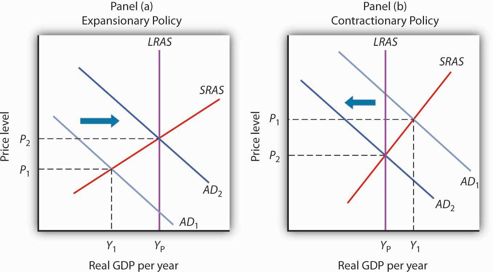
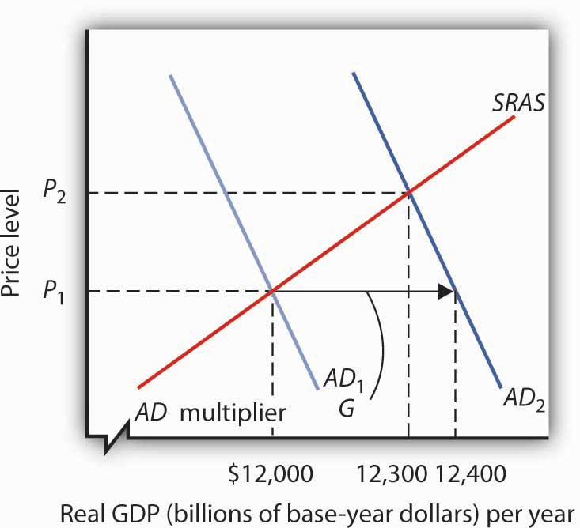
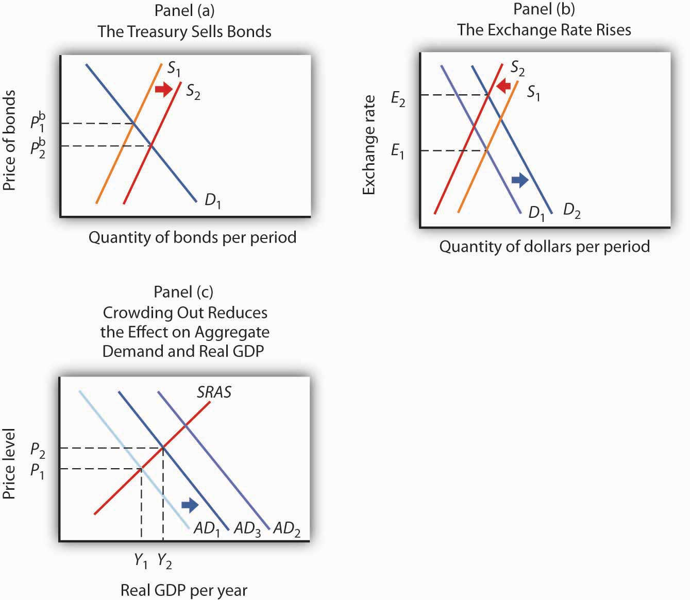

Shaken by the severity of both the recession that began in December 2007 and the financial crisis that occurred in the fall of 2008, Congress passed a huge $784 billion stimulus package in February 2009. President Obama described the measure as only “the beginning” of what the federal government ultimately would do to right the economy.
Over a quarter of the American Recovery and Reinvestment Act (ARRA) was for a variety of temporary tax rebates and credits for individuals and firms. For example, each worker making less than $75,000 a year received $400 ($800 for a working couple earning up to $150,000) as a kind of rebate for payroll taxes. That works out to $8 a week. Qualifying college students became eligible for $2,500 tax credits for educational expenses. During a certain period, a first-time homebuyer was eligible for a tax credit. The other roughly three-quarters of the ARRA were for a variety of government spending programs, including temporary transfers to state and local governments, extended unemployment insurance and other transfers to people (such as food stamps), and increased infrastructure spending. The president said that the measure would “ignite spending by businesses and consumers … and make the investment necessary for lasting growth and economic prosperity.”Barack Obama, Weekly Address of the President to the Nation, February 14, 2009, available at http://www.whitehouse.gov/blog/09/02/14/A-major-milestone/. Shortly after the passage of the ARRA, Congress passed the Cash for Clunkers program, which for a limited period of time allowed car buyers to trade in less-fuel-efficient cars for rebates of up to $4,500 toward buying new cars that met certain higher fuel-efficiency standards.
The ARRA illustrates an important difficulty of using fiscal policy in an effort to stabilize economic activity. It was passed over a year after the recession began. Only about 20% of the spending called for by the legislation took place in 2009, rising to about two-thirds through the middle of 2010. It was a guess what state the economy would be in then. As it turned out, the recession had officially ended, but there was still a large recessionary gap, and unemployment was still a major concern. There was a great deal of media controversy about how effective the policy had been and whether the resulting increase in national debt was worth it. Concern over the expanded size of the federal government created by the stimulus measures became a rallying cry for the Tea Party movement. A fiscal stimulus package of over $150 billion had already been tried earlier in February 2008 under President George W. Bush. It included $100 billion in temporary tax rebates to households—up to $600 for individuals and $1,200 for couples—and over $50 billion in tax breaks for businesses. The boost to aggregate demand seemed slight—consumers saved much of their rebate money. In November 2008, unemployment insurance benefits were extended for seven additional weeks, in recognition of the growing unemployment problem.
President Obama argued that his proposals for dealing with the economy in the short term would, coincidentally, also promote long-term economic health. Some critics argued for a greater focus on actual tax cuts while others were concerned about whether the spending would focus on getting the greatest employment increase or be driven by political considerations.
How do government tax and expenditure policies affect real GDP and the price level? Why do economists differ so sharply in assessing the likely impact of such policies? Can fiscal policy be used to stabilize the economy in the short run? What are the long-run effects of government spending and taxing?
We begin with a look at the government’s budget to see how it spends the tax revenue it collects. Clearly, the government’s budget is not always in balance, so we will also look at government deficits and debt. We will then look at how fiscal policy works to stabilize the economy, distinguishing between built-in stabilization methods and discretionary measures. We will end the chapter with a discussion of why fiscal policy is so controversial.
As in the previous chapter on monetary policy, our primary focus will be U.S. policy. However, the tools available to governments around the world are quite similar, as are the issues surrounding the use of fiscal policy.
We begin our analysis of fiscal policy with an examination of government purchases, transfer payments, and taxes in the U.S. economy.
The government-purchases component of aggregate demand includes all purchases by government agencies of goods and services produced by firms, as well as direct production by government agencies themselves. When the federal government buys staples and staplers, the transaction is part of government purchases. The production of educational and research services by public colleges and universities is also counted in the government-purchases component of GDP.
While government spending has grown over time, government purchases as a share of GDP declined from over 20% until the early 1990s to under 18% in 2001. Since then, though, the percentage of government purchases in GDP began to increase back toward 20% and then beyond. This first occurred as military spending picked up, and then, more recently, it rose even further during the 2007–2009 recession.
Figure 27.1 "Federal, State, and Local Purchases Relative to GDP, 1960–2011" shows federal as well as state and local government purchases as a percentage of GDP from 1960 to 2011. Notice the changes that have occurred over this period. In 1960, the federal government accounted for the majority share of total purchases. Since then, however, federal purchases have fallen by almost half relative to GDP, while state and local purchases relative to GDP have risen.
Figure 27.1 Federal, State, and Local Purchases Relative to GDP, 1960–2011

Government purchases were generally above 20% of GDP from 1960 until the early 1990s and then below 20% of GDP until the 2007-2009 recession. The share of government purchases in GDP began rising in the 21st century.
Source: Bureau of Economic Analysis, NIPA Table 1.1 and 3.1 (revised February 29, 2012).
A transfer paymentThe provision of aid or money to an individual who is not required to provide anything in exchange. is the provision of aid or money to an individual who is not required to provide anything in exchange for the payment. Social Security and welfare benefits are examples of transfer payments. During the 2007-2009 recession, transfers rose.
A number of changes have influenced transfer payments over the past several decades. First, they increased rapidly during the late 1960s and early 1970s. This was the period in which federal programs such as Medicare (health insurance for the elderly) and Medicaid (health insurance for the poor) were created and other programs were expanded.
Figure 27.2 "Federal, State, and Local Transfer Payments as a Percentage of GDP, 1960–2011" shows that transfer payment spending by the federal government and by state and local governments has risen as a percentage of GDP. In 1960, such spending totaled about 6% of GDP; by 2009, it had risen to about 18%. The federal government accounts for the bulk of transfer payment spending in the United States.
Figure 27.2 Federal, State, and Local Transfer Payments as a Percentage of GDP, 1960–2011

The chart shows transfer payment spending as a percentage of GDP from 1960 through 2011. This spending rose dramatically relative to GDP during the late 1960s and the 1970s as federal programs expanded. More recently, sharp increases in health-care costs have driven upward the spending for transfer payment programs such as Medicare and Medicaid. Transfer payments fluctuate with the business cycle, rising in times of recession and falling during times of expansion. As such, they rose sharply during the deep 2007-2009 recession.
Source: Bureau of Economic Analysis, NIPA Table 1.1, 3.2, and 3.3 (revised February 29, 2012).
Transfer payment spending relative to GDP tends to fluctuate with the business cycle. Transfer payments fell during the late 1970s, a period of expansion, then rose as the economy slipped into a recessionary gap during the 1979–1982 period. Transfer payments fell during the expansion that began late in 1982, then began rising in 1989 as the expansion began to slow. Transfer payments continued to rise relative to GDP during the recessions of 1990–1991 and 2001–2002 and then fell as the economy entered expansionary phases after each of those recessions. During the 2007—2009 recession, transfer payments rose again.
When economic activity falls, incomes fall, people lose jobs, and more people qualify for aid. People qualify to receive welfare benefits, such as cash, food stamps, or Medicaid, only if their income falls below a certain level. They qualify for unemployment compensation by losing their jobs. More people qualify for transfer payments during recessions. When the economy expands, incomes and employment rise, and fewer people qualify for welfare or unemployment benefits. Spending for those programs therefore tends to fall during an expansion.
Figure 27.3 "Government Spending as a Percentage of GDP, 1960–2011" summarizes trends in government spending since 1960. It shows three categories of government spending relative to GDP: government purchases, transfer payments, and net interest. Net interest includes payments of interest by governments at all levels on money borrowed, less interest earned on saving.
Figure 27.3 Government Spending as a Percentage of GDP, 1960–2011

This chart shows three major categories of government spending as percentages of GDP: government purchases, transfer payments, and net interest.
Source: Bureau of Economic Analysis, NIPA Table 1.1 and 3.1 (revised February 29, 2012).
Taxes affect the relationship between real GDP and personal disposable income; they therefore affect consumption. They also influence investment decisions. Taxes imposed on firms affect the profitability of investment decisions and therefore affect the levels of investment firms will choose. Payroll taxes imposed on firms affect the costs of hiring workers; they therefore have an impact on employment and on the real wages earned by workers.
The bulk of federal receipts come from the personal income tax and from payroll taxes. State and local tax receipts are dominated by property taxes and sales taxes. The federal government, as well as state and local governments, also collects taxes imposed on business firms, such as taxes on corporate profits. Figure 27.4 "The Composition of Federal, State, and Local Revenues" shows the composition of federal, state, and local receipts in a recent year.
Figure 27.4 The Composition of Federal, State, and Local Revenues

Federal receipts come primarily from payroll taxes and from personal taxes such as the personal income tax. State and local tax receipts come from a variety of sources; the most important are property taxes, sales taxes, income taxes, and grants from the federal government. Data are for third-quarter 2011, in billions of dollars, seasonally adjusted at annual rates.
Source: Bureau of Economic Analysis, NIPA Table 3.2 and 3.3 (revised February 29, 2012).
The government’s budget balance is the difference between the government’s revenues and its expenditures. A budget surplusSituation that occurs if government revenues exceed expenditures. occurs if government revenues exceed expenditures. A budget deficitSituation that occurs if government expenditures exceed revenues. occurs if government expenditures exceed revenues. The minus sign is often omitted when reporting a deficit. If the budget surplus equals zero, we say the government has a balanced budgetSituation that occurs if the budget surplus equals zero..
Figure 27.5 "Government Revenue and Expenditure as a Percentage of GDP, 1960–2011" compares federal, state, and local government revenues to expenditures relative to GDP since 1960. The government’s budget was generally in surplus in the 1960s, then mostly in deficit since, except for a brief period between 1998 and 2001. Bear in mind that these data are for all levels of government.
Figure 27.5 Government Revenue and Expenditure as a Percentage of GDP, 1960–2011

The government’s budget was generally in surplus in the 1960s, then mostly in deficit since, except for a brief period between 1998 and 2001.
Source: Bureau of Economic Analysis, NIPA Table 1.1 and 3.1 (revised February 29, 2012).
The administration of George W. Bush saw a large increase in the federal deficit. In part, this was the result of the government’s response to the terrorist attacks in 2001. It also results, however, from large increases in federal spending at all levels together with tax cuts in 2001, 2002, and 2003. The federal deficit grew even larger during the administration of Barack Obama. The increase stemmed from both reduced revenues and increased spending resulting from the recession that began in 2007 and the stimulus.
The national debtThe sum of all past federal deficits, minus any surpluses. is the sum of all past federal deficits, minus any surpluses. Figure 27.6 "The National Debt and the Economy, 1929–2010" shows the national debt as a percentage of GDP. It suggests that, relative to the level of economic activity, the debt is well below the levels reached during World War II. The ratio of debt to GDP rose from 1981 to 1996 and fell in the last years of the 20th century; it began rising again in 2002 and has risen substantially since the recession that began in 2007.
Figure 27.6 The National Debt and the Economy, 1929–2010

The national debt relative to GDP is much smaller today than it was during World War II. The ratio of debt to GDP rose from 1981 to 1996 and fell in the last years of the 20th century; it began rising again in 2002, markedly so in 2009 and 2010.
Sources: Data for 1929–1938 from Historical Statistics of the United States, Colonial Times to 1957—not strictly comparable with later data. Data for remaining years from Office of Management and Budget, Budget of the United States Government, Fiscal Year 2012, Historical Tables.
Judged by international standards, the U.S. national debt relative to its GDP is above average. Figure 27.7 "Debts and Deficits for 32 Nations, 2010" shows national debt as a percentage of GDP for 32 countries in 2010. It also shows deficits or surpluses as a percentage of GDP.
In an intense struggle between the Republican-majority U.S. House of Representatives and the Obama administration and the Democratic-majority U.S. Senate in the summer of 2011 that almost resulted in a government shutdown, the Budget Control Act of 2011 resulted in a $1 trillion deficit reduction for the current fiscal year with additional reductions of $1.2–1.5 trillion scheduled to follow. The one thing that all politicians seem to agree on is that this measure will not be enough to put the U.S. government deficit and debt back onto a sustainable long-term path. The various factions differ on what mix of spending cuts and tax increases should be used to control the deficit and debt over the long term. They also disagree on when these changes should take place, given the still-fragile state of the U.S. economy in 2012.
Figure 27.7 Debts and Deficits for 32 Nations, 2010

The chart shows national debt as a percentage of GDP and deficits or surpluses as a percentage of GDP in 2010. The national debt of the United States relative to its GDP was above average among these nations.
Source: Organisation for Economic Co-operation and Development (OECD). Factbook 2011–2012: Economic, Environmental and Social Statistics. OECD Publishing, 2011.
What happens to the national debt when there is a budget surplus? What happens to it when there is a budget deficit? What happens to the national debt if there is a decrease in a surplus? What happens to it if the deficit falls?

One method of assessing the degree to which current fiscal policies affect future generations is through a device introduced in the early 1990s called generational accounting. It measures the impact of current fiscal policies on different generations in the economy, including future generations. Generational accounting is now practiced by governments in many countries, including the United States and the European Union.
As populations age, the burden of current fiscal policy is increasingly borne by younger people in the population. In most countries, economists computing generational accounts have found that people age 40 or below will pay more in taxes than they receive in transfer payments, while those age 60 or above will receive more in transfers than they pay in taxes. The differences are huge. According to a recent study by Jagadeesh Gokhale, summarized in the table below, in 2004 in the United States, a male age 30 could expect to pay $201,300 more than he receives in government transfers during his lifetime, while another male age 75 could expect to receive $171,100 more in transfers than he paid in taxes during his lifetime. That is a difference of $372,400! For future generations, those born after the year 2004, the difference is even more staggering. A male born after the year 2005 can expect to pay $332,200 more in taxes than he will receive in transfer payments. For a woman, the differences are also large but not as great. A woman age 30 in 2004 could expect to pay $30,200 more in taxes than she will receive in transfers during her lifetime, while a woman age 75 could expect to receive transfers of $184,100 in excess of her lifetime tax burden.
The table below gives generational accounting estimates for the United States for the year 2004 for males and females. Figures shown are in thousands of 2004 dollars. Notice that the net burden on females is much lower than for males. That is because women live longer than men and thus receive Social Security and Medicare benefits over a longer period of time. Women also have lower labor force participation rates and earn less than men, and pay lower taxes as a result.
| Year of birth | Age in 2004 | Male | Female |
|---|---|---|---|
| 2005 (future born) | −1 | 333.2 | 26.0 |
| 2004 (newborn) | 0 | 104.3 | 8.1 |
| 1989 | 15 | 185.7 | 42.0 |
| 1974 | 30 | 201.3 | 30.2 |
| 1959 | 45 | 67.8 | −54.1 |
| 1944 | 60 | −162.6 | −189.4 |
| 1929 | 75 | −171.1 | −184.1 |
| 1914 | 90 | −65.0 | −69.2 |
Generational accounting has its critics—for example, the table above only measures direct taxes and transfers but omits benefits from government spending on public goods and services. In addition, government spending programs can be modified, which would alter the impact on future generations. Nonetheless, it does help to focus attention on the sustainability of current fiscal policies. Can future generations pay for Social Security, Medicare, and other retirement and health care spending as currently configured? Should they be asked to do so?
Source: Jagadeesh Gokhale, “Generational Accounting,” The New Palgrave Dictionary of Economics Online, 2nd ed., 2008.
A budget surplus leads to a decline in national debt; a budget deficit causes the national debt to grow. If there is a decrease in a budget surplus, national debt still declines but by less than it would have had the surplus not gotten smaller. If there is a decrease in the budget deficit, the national debt still grows, but by less than it would have if the deficit had not gotten smaller.
Fiscal policy—the use of government expenditures and taxes to influence the level of economic activity—is the government counterpart to monetary policy. Like monetary policy, it can be used in an effort to close a recessionary or an inflationary gap.
Some tax and expenditure programs change automatically with the level of economic activity. We will examine these first. Then we will look at how discretionary fiscal policies work. Four examples of discretionary fiscal policy choices were the tax cuts introduced by the Kennedy, Reagan, and George W. Bush administrations and the increase in government purchases proposed by President Clinton in 1993. The 2009 fiscal stimulus bill passed in the first months of the administration of Barack Obama included both tax rebates and spending increases. All were designed to stimulate aggregate demand and close recessionary gaps.
Certain government expenditure and taxation policies tend to insulate individuals from the impact of shocks to the economy. Transfer payments have this effect. Because more people become eligible for income supplements when income is falling, transfer payments reduce the effect of a change in real GDP on disposable personal income and thus help to insulate households from the impact of the change. Income taxes also have this effect. As incomes fall, people pay less in income taxes.
Any government program that tends to reduce fluctuations in GDP automatically is called an automatic stabilizerAny government program that tends to reduce fluctuations in GDP automatically.. Automatic stabilizers tend to increase GDP when it is falling and reduce GDP when it is rising.
To see how automatic stabilizers work, consider the decline in real GDP that occurred during the recession of 1990–1991. Real GDP fell 1.6% from the peak to the trough of that recession. The reduction in economic activity automatically reduced tax payments, reducing the impact of the downturn on disposable personal income. Furthermore, the reduction in incomes increased transfer payment spending, boosting disposable personal income further. Real disposable personal income thus fell by only 0.9% during the 1990—1991 recession, a much smaller percentage than the reduction in real GDP. Rising transfer payments and falling tax collections helped cushion households from the impact of the recession and kept real GDP from falling as much as it would have otherwise.
Automatic stabilizers have emerged as key elements of fiscal policy. Increases in income tax rates and unemployment benefits have enhanced their importance as automatic stabilizers. The introduction in the 1960s and 1970s of means-tested federal transfer payments, in which individuals qualify depending on their income, added to the nation’s arsenal of automatic stabilizers. The advantage of automatic stabilizers is suggested by their name. As soon as income starts to change, they go to work. Because they affect disposable personal income directly, and because changes in disposable personal income are closely linked to changes in consumption, automatic stabilizers act swiftly to reduce the degree of changes in real GDP.
It is important to note that changes in expenditures and taxes that occur through automatic stabilizers do not shift the aggregate demand curve. Because they are automatic, their operation is already incorporated in the curve itself.
As we begin to look at deliberate government efforts to stabilize the economy through fiscal policy choices, we note that most of the government’s taxing and spending is for purposes other than economic stabilization. For example, the increase in defense spending in the early 1980s under President Ronald Reagan and in the administration of George W. Bush were undertaken primarily to promote national security. That the increased spending affected real GDP and employment was a by-product. The effect of such changes on real GDP and the price level is secondary, but it cannot be ignored. Our focus here, however, is on discretionary fiscal policy that is undertaken with the intention of stabilizing the economy. As we have seen, the tax cuts introduced by the Bush administration were justified as expansionary measures.
Discretionary government spending and tax policies can be used to shift aggregate demand. Expansionary fiscal policy might consist of an increase in government purchases or transfer payments, a reduction in taxes, or a combination of these tools to shift the aggregate demand curve to the right. A contractionary fiscal policy might involve a reduction in government purchases or transfer payments, an increase in taxes, or a mix of all three to shift the aggregate demand curve to the left.
Figure 27.8 "Expansionary and Contractionary Fiscal Policies to Shift Aggregate Demand" illustrates the use of fiscal policy to shift aggregate demand in response to a recessionary gap and an inflationary gap. In Panel (a), the economy produces a real GDP of Y1, which is below its potential level of Yp. An expansionary fiscal policy seeks to shift aggregate demand to AD2 in order to close the gap. In Panel (b), the economy initially has an inflationary gap at Y1. A contractionary fiscal policy seeks to reduce aggregate demand to AD2 and close the gap. Now we shall look at how specific fiscal policy options work. In our preliminary analysis of the effects of fiscal policy on the economy, we will assume that at a given price level these policies do not affect interest rates or exchange rates. We will relax that assumption later in the chapter.
Figure 27.8 Expansionary and Contractionary Fiscal Policies to Shift Aggregate Demand
In Panel (a), the economy faces a recessionary gap (YP − Y1). An expansionary fiscal policy seeks to shift aggregate demand to AD2 to close the gap. In Panel (b), the economy faces an inflationary gap (Y1 − YP). A contractionary fiscal policy seeks to reduce aggregate demand to AD2 to close the gap.
One policy through which the government could seek to shift the aggregate demand curve is a change in government purchases. We learned that the aggregate demand curve shifts to the right by an amount equal to the initial change in government purchases times the multiplier. This multiplied effect of a change in government purchases occurs because the increase in government purchases increases income, which in turn increases consumption. Then, part of the impact of the increase in aggregate demand is absorbed by higher prices, preventing the full increase in real GDP that would have occurred if the price level did not rise.
Figure 27.9 "An Increase in Government Purchases" shows the effect of an increase in government purchases of $200 billion. The initial price level is P1 and the initial equilibrium real GDP is $12,000 billion. Suppose the multiplier is 2. The $200 billion increase in government purchases increases the total quantity of goods and services demanded, at a price level of P1, by $400 billion (the $200 billion increase in government purchases times the multiplier) to $12,400 billion. The aggregate demand thus shifts to the right by that amount to AD2. The equilibrium level of real GDP rises to $12,300 billion, and the price level rises to P2.
Figure 27.9 An Increase in Government Purchases
The economy shown here is initially in equilibrium at a real GDP of $12,000 billion and a price level of P1. An increase of $200 billion in the level of government purchases (ΔG) shifts the aggregate demand curve to the right by $400 billion to AD2. The equilibrium level of real GDP rises to $12,300 billion, while the price level rises to P2.
A reduction in government purchases would have the opposite effect. The aggregate demand curve would shift to the left by an amount equal to the initial change in government purchases times the multiplier. Real GDP and the price level would fall.
One of the first fiscal policy measures undertaken by the Kennedy administration in the 1960s was an investment tax credit. An investment tax credit allows a firm to reduce its tax liability by a percentage of the investment it undertakes during a particular period. With an investment tax credit of 10%, for example, a firm that engaged in $1 million worth of investment during a year could reduce its tax liability for that year by $100,000. The investment tax credit introduced by the Kennedy administration was later repealed. It was reintroduced during the Reagan administration in 1981, then abolished by the Tax Reform Act of 1986. President Clinton called for a new investment tax credit in 1993 as part of his job stimulus proposal, but that proposal was rejected by Congress. The Bush administration reinstated the investment tax credit as part of its tax cut package.
An investment tax credit is intended, of course, to stimulate additional private sector investment. A reduction in the tax rate on corporate profits would be likely to have a similar effect. Conversely, an increase in the corporate income tax rate or a reduction in an investment tax credit could be expected to reduce investment.
A change in investment affects the aggregate demand curve in precisely the same manner as a change in government purchases. It shifts the aggregate demand curve by an amount equal to the initial change in investment times the multiplier.
An increase in the investment tax credit, or a reduction in corporate income tax rates, will increase investment and shift the aggregate demand curve to the right. Real GDP and the price level will rise. A reduction in the investment tax credit, or an increase in corporate income tax rates, will reduce investment and shift the aggregate demand curve to the left. Real GDP and the price level will fall.Investment also affects the long-run aggregate supply curve, since a change in the capital stock changes the potential level of real GDP. We examined this earlier in the chapter on economic growth.
Income taxes affect the consumption component of aggregate demand. An increase in income taxes reduces disposable personal income and thus reduces consumption (but by less than the change in disposable personal income). That shifts the aggregate demand curve leftward by an amount equal to the initial change in consumption that the change in income taxes produces times the multiplier.A change in tax rates will change the value of the multiplier. The reason is explained in another chapter. A reduction in income taxes increases disposable personal income, increases consumption (but by less than the change in disposable personal income), and increases aggregate demand.
Suppose, for example, that income taxes are reduced by $200 billion. Only some of the increase in disposable personal income will be used for consumption and the rest will be saved. Suppose the initial increase in consumption is $180 billion. Then the shift in the aggregate demand curve will be a multiple of $180 billion; if the multiplier is 2, aggregate demand will shift to the right by $360 billion. Thus, as compared to the $200-billion increase in government purchases that we saw in Figure 27.9 "An Increase in Government Purchases", the shift in the aggregate demand curve due to an income tax cut is somewhat less, as is the effect on real GDP and the price level.
Changes in transfer payments, like changes in income taxes, alter the disposable personal income of households and thus affect their consumption, which is a component of aggregate demand. A change in transfer payments will thus shift the aggregate demand curve because it will affect consumption. Because consumption will change by less than the change in disposable personal income, a change in transfer payments of some amount will result in a smaller change in real GDP than would a change in government purchases of the same amount. As with income taxes, a $200-billion increase in transfer payments will shift the aggregate demand curve to the right by less than the $200-billion increase in government purchases that we saw in Figure 27.9 "An Increase in Government Purchases".
Table 27.1 "Fiscal Policy in the United States Since 1964" summarizes U.S. fiscal policies undertaken to shift aggregate demand since the 1964 tax cuts. We see that expansionary policies have been chosen in response to recessionary gaps and that contractionary policies have been chosen in response to inflationary gaps. Changes in government purchases and in taxes have been the primary tools of fiscal policy in the United States.
Table 27.1 Fiscal Policy in the United States Since 1964
| Year | Situation | Policy response |
|---|---|---|
| 1968 | Inflationary gap | A temporary tax increase, first recommended by President Johnson’s Council of Economic Advisers in 1965, goes into effect. This one-time surcharge of 10% is added to individual income tax liabilities. |
| 1969 | Inflationary gap | President Nixon, facing a continued inflationary gap, orders cuts in government purchases. |
| 1975 | Recessionary gap | President Ford, facing a recession induced by an OPEC oil-price increase, proposes a temporary 10% tax cut. It is passed almost immediately and goes into effect within two months. |
| 1981 | Recessionary gap | President Reagan had campaigned on a platform of increased defense spending and a sharp cut in income taxes. The tax cuts are approved in 1981 and are implemented over a period of three years. The increased defense spending begins in 1981. While the Reagan administration rejects the use of fiscal policy as a stabilization tool, its policies tend to increase aggregate demand early in the 1980s. |
| 1992 | Recessionary gap | President Bush had rejected the use of expansionary fiscal policy during the recession of 1990–1991. Indeed, he agreed late in 1990 to a cut in government purchases and a tax increase. In a campaign year, however, he orders a cut in withholding rates designed to increase disposable personal income in 1992 and to boost consumption. |
| 1993 | Recessionary gap | President Clinton calls for a $16-billion jobs package consisting of increased government purchases and tax cuts aimed at stimulating investment. The president says the plan will create 500,000 new jobs. The measure is rejected by Congress. |
| 2001 | Recessionary gap | President Bush campaigned to reduce taxes in order to reduce the size of government and encourage long-term growth. When he took office in 2001, the economy was weak and the $1.35-billion tax cut was aimed at both long-term tax relief and at stimulating the economy in the short term. It included, for example, a personal income tax rebate of $300 to $600 per household. With unemployment still high a couple of years into the expansion, another tax cut was passed in 2003. |
| 2008 | Recessionary gap | Fiscal stimulus package of $150 billion to spur economy. It included $100 billion in tax rebates and $50 billion in tax cuts for businesses. |
| 2009 | Recessionary gap | Fiscal stimulus package of $784 billion included tax rebates and increased government spending passed in early days of President Obama’s administration. |
| 2010–2012 | Recessionary gap | Extensions of the payroll tax reduction and unemployment insurance benefits continued. |
Suppose the economy has an inflationary gap. What fiscal policies might be used to close the gap? Using the model of aggregate demand and aggregate supply, illustrate the effect of these policies.
There is a wide range of opinions among economists regarding the size of the fiscal multiplier. In 2011, the American Economic Association’s Journal of Economic Literature published three papers on this topic in a special section titled “Forum: The Multiplier.” The papers provide at least two-and-a-half different answers!
In her paper titled “Can Government Purchases Stimulate the Economy?,” Valerie Ramey concludes that the size of the government purchases multiplier depends on many factors but that, when the increase in government purchases is temporary and financed by government borrowing, the multiplier “is probably between 0.8 and 1.5. Reasonable people can argue, however, that the data do not reject 0.5 to 2.” This is quite a wide range.
In “An Empirical Analysis of the Revival of Fiscal Activism in the 2000s,” John Taylor argues that the various components of the recent fiscal packages (tax cuts, aid to states, and increased government purchases) had little effect on the economy—implying a multiplier of zero or nearly so. Using aggregate quarterly data simulations for the 2000s, he argues that transfers and tax cuts were used by households to increase saving, that the increase in government purchases were too small to have made much of a difference, and that state and local governments used their stimulus dollars for transfers or to reduce their borrowing.
In “On Measuring the Effects of Fiscal Policy in Recessions,” Jonathan Parker essentially argues that the statistical models built to date are ultimately inadequate and that we will only be able to get at the answer as better and more refined studies are conducted. Noting that the multiplier effect of fiscal policy is likely to depend on the state of the economy, he concludes that “an important difficulty with further investigation is the limited macroeconomic data available on the effects of policy in recessions (or deep recessions).” Perhaps we need a few more Great Recessions in order to figure this out.
In another American Economic Association publication, the Journal of Economic Perspectives, Alan Auerbach, William Gale, and Benjamin Harris provide an extensive review of the variety in multiplier estimates, which they acknowledge is “embarrassingly large” after so many years of trying to measure it. Concerning the 2009 American Recovery and Reinvestment Act, though, they write, “If a fiscal stimulus were ever to be considered appropriate, the beginning of 2009 was such a time.…In these circumstances, our judgment is that a fiscal expansion carried much smaller risks than the lack of one would have.”
Sources: Alan J. Auerbach, William G. Gale, and Benjamin H. Harris, “Activist Fiscal Policy,” Journal of Economic Perspectives 24, no. 4 (Fall 2010): 141–64; Jonathan A. Parker, “On Measuring the Effects of Fiscal Policy in Recessions,” Journal of Economic Literature 49, no. 3 (September 2011): 703–18; Valerie A. Ramey, “Can Government Purchases Stimulate the Economy?,” Journal of Economic Literature 49, no. 3 (September 2011): 673–85; John B. Taylor, “An Empirical Analysis of the Revival of Fiscal Activism in the 2000s,” Journal of Economic Literature 49, no. 3 (September 2011): 686–702.
Fiscal policies that could be used to close an inflationary gap include reductions in government purchases and transfer payments and increases in taxes. As shown in Panel (b) of Figure 27.8 "Expansionary and Contractionary Fiscal Policies to Shift Aggregate Demand", the goal would be to shift the aggregate demand curve to the left so that it will intersect the short-run aggregate supply curve at YP.
The discussion in the previous section about the use of fiscal policy to close gaps suggests that economies can be easily stabilized by government actions to shift the aggregate demand curve. However, as we discovered with monetary policy in the previous chapter, government attempts at stabilization are fraught with difficulties.
Discretionary fiscal policy is subject to the same lags that we discussed for monetary policy. It takes some time for policy makers to realize that a recessionary or an inflationary gap exists—the recognition lag. Recognition lags stem largely from the difficulty of collecting economic data in a timely and accurate fashion. The current recession was not identified until October 2008, when the Business Cycle Dating Committee of the National Bureau of Economic Research announced that it had begun in December 2007. Then, more time elapses before a fiscal policy, such as a change in government purchases or a change in taxes, is agreed to and put into effect—the implementation lag. Finally, still more time goes by before the policy has its full effect on aggregate demand—the impact lag.
Changes in fiscal policy are likely to involve a particularly long implementation lag. A tax cut was proposed to presidential candidate John F. Kennedy in 1960 as a means of ending the recession that year. He recommended it to Congress in 1962. It was not passed until 1964, three years after the recession had ended. Some economists have concluded that the long implementation lag for discretionary fiscal policy makes this stabilization tool ineffective. Fortunately, automatic stabilizers respond automatically to changes in the economy. They thus avoid not only the implementation lag but also the recognition lag.
The implementation lag results partly from the nature of bureaucracy itself. The CBO estimate that only a portion of the spending for the stimulus plan passed in 2009 will be spent in the next two years is an example of the implementation lag. Government spending requires bureaucratic approval of that spending. For example, a portion of the stimulus plan must go through the Department of Energy. One division of the department focuses on approving loan guarantees for energy-saving industrial projects. It was created early in 2007 as part of another effort to stimulate economic activity. A Minnesota company, Sage Electrochromics, has developed a process for producing windows that can be darkened or lightened on demand to reduce energy use in buildings. Sage applied two years ago for a guarantee on a loan of $66 million to build a plant that would employ 250 workers. Its application has not been approved. In fact, the loan approval division, which will be crucial for projects in the stimulus plan, has never approved any application made to it in its two years in existence!
Energy Secretary Steven Chu, a Nobel Prize-winning physicist, recognizes the urgency of the problem. In an interview with the Wall Street Journal, Dr. Chu said that his agency would have to do better. “Otherwise, it’s just going to be a bust,” he said.Stephen Power and Neil King, Jr., “Next Challenge on Stimulus: Spending All That Money,” Wall Street Journal, February 13, 2009, p. A1.
Because an expansionary fiscal policy either increases government spending or reduces revenues, it increases the government budget deficit or reduces the surplus. A contractionary policy is likely to reduce a deficit or increase a surplus. In either case, fiscal policy thus affects the bond market. Our analysis of monetary policy showed that developments in the bond market can affect investment and net exports. We shall find in this section that the same is true for fiscal policy.
Figure 27.10 "An Expansionary Fiscal Policy and Crowding Out" shows the impact of an expansionary fiscal policy: an increase in government purchases. The increase in government purchases increases the deficit or reduces the surplus. In either case, the Treasury will sell more bonds than it would have otherwise, shifting the supply curve for bonds to the right in Panel (a). That reduces the price of bonds, raising the interest rate. The increase in the interest rate reduces the quantity of private investment demanded. The higher interest rate increases the demand for and reduces the supply of dollars in the foreign exchange market, raising the exchange rate in Panel (b). A higher exchange rate reduces net exports. Panel (c) shows the effects of all these changes on the aggregate demand curve. Before the change in government purchases, the economy is in equilibrium at a real GDP of Y1, determined by the intersection of AD1 and the short-run aggregate supply curve. The increase in government expenditures would shift the curve outward to AD2 if there were no adverse impact on investment and net exports. But the reduction in investment and net exports partially offsets this increase. Taking the reduction in investment and net exports into account means that the aggregate demand curve shifts only to AD3. The tendency for an expansionary fiscal policy to reduce other components of aggregate demand is called crowding outThe tendency for an expansionary fiscal policy to reduce other components of aggregate demand.. In the short run, this policy leads to an increase in real GDP to Y2 and a higher price level, P2.
Figure 27.10 An Expansionary Fiscal Policy and Crowding Out
In Panel (a), increased government purchases are financed through the sale of bonds, lowering their price to Pb2. In Panel (b), the higher interest rate causes the exchange rate to rise, reducing net exports. Increased government purchases would shift the aggregate demand curve to AD2 in Panel (c) if there were no crowding out. Crowding out of investment and net exports, however, causes the aggregate demand curve to shift only to AD3. Then a higher price level means that GDP rises only to Y2.
Crowding out reduces the effectiveness of any expansionary fiscal policy, whether it be an increase in government purchases, an increase in transfer payments, or a reduction in income taxes. Each of these policies increases the deficit and thus increases government borrowing. The supply of bonds increases, interest rates rise, investment falls, the exchange rate rises, and net exports fall.
Note, however, that it is private investment that is crowded out. The expansionary fiscal policy could take the form of an increase in the investment component of government purchases. As we have learned, some government purchases are for goods, such as office supplies, and services. But the government can also purchase investment items, such as roads and schools. In that case, government investment may be crowding out private investment.
The reverse of crowding out occurs with a contractionary fiscal policy—a cut in government purchases or transfer payments, or an increase in taxes. Such policies reduce the deficit (or increase the surplus) and thus reduce government borrowing, shifting the supply curve for bonds to the left. Interest rates drop, inducing a greater quantity of investment. Lower interest rates also reduce the demand for and increase the supply of dollars, lowering the exchange rate and boosting net exports. This phenomenon is known as “crowding inThe tendency for a contractionary fiscal policy to increase other components of aggregate demand..”
Crowding out and crowding in clearly weaken the impact of fiscal policy. An expansionary fiscal policy has less punch; a contractionary policy puts less of a damper on economic activity. Some economists argue that these forces are so powerful that a change in fiscal policy will have no effect on aggregate demand. Because empirical studies have been inconclusive, the extent of crowding out (and its reverse) remains a very controversial area of study.
Also, the fact that government deficits today may reduce the capital stock that would otherwise be available to future generations does not imply that such deficits are wrong. If, for example, the deficits are used to finance public sector investment, then the reduction in private capital provided to the future is offset by the increased provision of public sector capital. Future generations may have fewer office buildings but more schools.
Suppose Congress and the president agree that something needs to be done to close a recessionary gap. We have learned that fiscal policies that increase government purchases, reduce taxes, or increase transfer payments—or do a combination of these—all have the potential, theoretically, to raise real GDP. The government must decide which kind of fiscal policy to employ. Because the decision makers who determine fiscal policy are all elected politicians, the choice among the policy options available is an intensely political matter, often reflecting the ideology of the politicians.
For example, those who believe that government is too big would argue for tax cuts to close recessionary gaps and for spending cuts to close inflationary gaps. Those who believe that the private sector has failed to provide adequately a host of services that would benefit society, such as better education or public transportation systems, tend to advocate increases in government purchases to close recessionary gaps and tax increases to close inflationary gaps.
Another area of contention comes from those who believe that fiscal policy should be constructed primarily so as to promote long-term growth. Supply-side economicsThe school of thought that promotes the use of fiscal policy to stimulate long-run aggregate supply. is the school of thought that promotes the use of fiscal policy to stimulate long-run aggregate supply. Supply-side economists advocate reducing tax rates in order to encourage people to work more or more individuals to work and providing investment tax credits to stimulate capital formation.
While there is considerable debate over how strong the supply-side effects are in relation to the demand-side effects, such considerations may affect the choice of policies. Supply-siders tend to favor tax cuts over increases in government purchases or increases in transfer payments. President Reagan advocated tax cuts in 1981 on the basis of their supply-side effects. Coupled with increased defense spending in the early 1980s, fiscal policy under Mr. Reagan clearly stimulated aggregate demand by increasing both consumption and investment. Falling inflation and accelerated growth are signs that supply-side factors may also have been at work during that period. President George W. Bush’s chief economic adviser, N. Gregory Mankiw, argued that the Bush tax cuts would encourage economic growth, a supply-side argument. Mr. Bush’s next chief economic adviser, Ben Bernanke, who became the next chairman of the Federal Reserve Board in 2006, made a similar argument and urged that the Bush tax cuts be made permanent.
Finally, even when there is agreement to stimulate the economy, say through increasing government expenditures on highways, the how question remains. How should the expenditures be allocated? Specifically, which states should the highways run through? Each member of Congress has a political stake in the outcome. These types of considerations make the implementation lag particularly long for fiscal policy.
Do the following hypothetical situations tend to enhance or make more difficult the use of fiscal policy as a stabilization tool?
In an intriguing study, economist Baotai Wang examined the degree of crowding out of Canadian private investment as a result of government expenditures from 1961–2000. What made Professor Wang’s analysis unusual was that he divided Canadian government expenditures into five categories: expenditures for health and education, expenditures for capital and infrastructure, expenditures for the protection of persons and property (which included defense spending), expenditures for debt services, and expenditures for government and social services.
Mr. Wang found that only government expenditures for capital and infrastructure crowded out private investment. While these expenditures reduced private investment, they represented increased public sector investment for things such as highways and ports.
Expenditures for health and education actually “crowded in” private sector investment. These expenditures, Mr. Wang argued, represented increases in human capital. Such increases complement returns on private sector investment and therefore increase it.
Mr. Wang found that Canadian government expenditures for debt service, the protection of persons and property, and for government and social services had no effect on private sector investment. He argued that expenditures for protection of persons and property may involve some crowding out, but that they also stimulated private investment by firms winning government contracts for defense purchases. The same explanation could be applied to government expenditures for government and social services. These also include an element of investment in human capital.
His results suggest that crowding out depends on the nature of spending done by the government. Some kinds of spending clearly did not crowd out private sector investment in Canada.
Source: Baotai Wang, “Effects of Government Expenditure on Private Investment: Canadian Empirical Evidence,” Empirical Economics 30, no. 2 (September 2005): 493–504.
The government sector plays a major role in the economy. The spending, tax, and transfer policies of local, state, and federal agencies affect aggregate demand and aggregate supply and thus affect the level of real GDP and the price level. An expansionary policy tends to increase real GDP. Such a policy could be used to close a recessionary gap. A contractionary fiscal policy tends to reduce real GDP. A contractionary policy could be used to close an inflationary gap.
Government purchases of goods and services have a direct impact on aggregate demand. An increase in government purchases shifts the aggregate demand curve by the amount of the initial change in government purchases times the multiplier. Changes in personal income taxes or in the level of transfer payments affect disposable personal income. They change consumption, though initially by less than the amount of the change in taxes or transfers. They thus cause somewhat smaller shifts in the aggregate demand curve than do equal changes in government purchases.
There are several issues in the use of fiscal policies for stabilization purposes. They include lags associated with fiscal policy, crowding out, the choice of which fiscal policy tool to use, and the possible burdens of accumulating national debt.
Look up the table on Federal Receipts and Outlays, by Major Category, in the most recent Economic Report of the President available in your library or on the Internet.
Complete the following table:
| Category | Total outlays | Percentage of total outlays |
|---|---|---|
| National defense | ||
| International affairs | ||
| Health | ||
| Medicare | ||
| Income security | ||
| Social Security | ||
| Net interest | ||
| Other |
Look up the table on ownership of U.S. Treasury securities in the most recent Economic Report of the President available on the Internet.
Suppose a country has a national debt of $5,000 billion, a GDP of $10,000 billion, and a budget deficit of $100 billion.
Suppose a country’s debt rises by 10% and its GDP rises by 12%.
The data below show a country’s national debt and its prime lending rate.
| Year | National debt (billions of $) | Lending rate (%) |
|---|---|---|
| 1992 | 4,064 | 6.0 |
| 1993 | 4,411 | 6.0 |
| 1994 | 4,692 | 8.5 |
| 1995 | 4,973 | 8.7 |
| 1996 | 5,224 | 8.3 |
| 1997 | 5,413 | 8.5 |
Suppose a country increases government purchases by $100 billion. Suppose the multiplier is 1.5 and the economy’s real GDP is $5,000 billion.
Suppose a country decreases government purchases by $100 billion. Suppose the multiplier is 1.5 and the economy’s real GDP is $5,000 billion.
Suppose a country decreases income taxes by $100 billion, and this leads to an increase in consumption spending of $90 billion. Suppose the multiplier is 1.5 and the economy’s real GDP is $5,000 billion.
Suppose a country increases income taxes by $100 billion, and this leads to a decrease in consumption spending of $90 billion. Suppose the multiplier is 1.5 and the economy’s real GDP is $5,000 billion.
Suppose a country institutes an investment tax credit, and this leads to an increase in investment spending of $100 billion. Suppose the multiplier is 1.5 and the economy’s real GDP is $5,000 billion.
Suppose a country repeals an investment tax credit, and this leads to a decrease in investment spending of $100 billion. Suppose the multiplier is 1.5 and the economy’s real GDP is $5,000 billion.